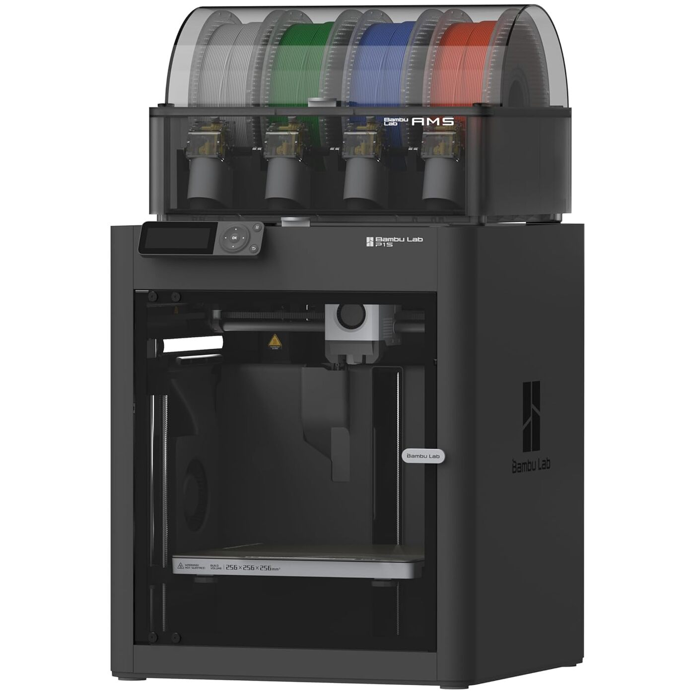
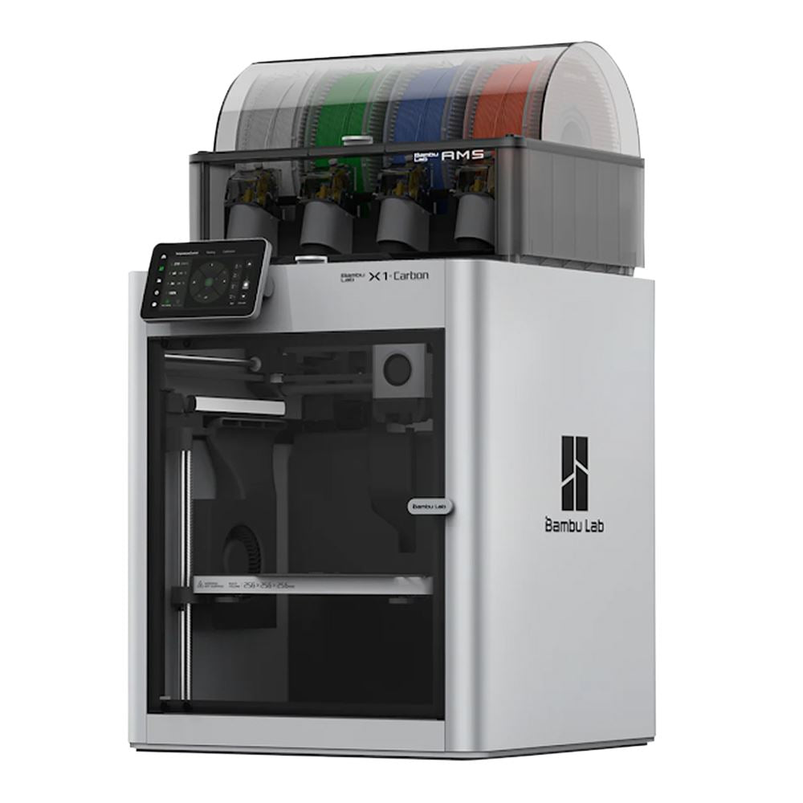

3D Printer head-to-head · Updated 2026-10-04 · Based on independent reviewer consensus

$699-$949
The sweet spot of the 3D printing world. P1S lineage proven over 3,000+ hours of reliable printing, now with multi-color AMS in the Combo. Enclosed chamber handles ABS/ASA that open printers cannot. The default recommendation for anyone from hobbyist to small print farm.
Check Price on Amazon →
$1,199-$1,499
The professional workhorse. Hardened components print abrasive filaments (carbon fiber, glass-filled nylon) that destroy lesser printers. Lidar-assisted calibration holds tolerances print after print.
🔍 Purchase link under verification
Highlighted rows show where they differ. Dimmed rows are effectively the same.
| Spec | Bambu Lab P1S Combo | Bambu Lab X1 Carbon Combo |
|---|---|---|
| AMS 💡 Bambu's auto filament changer — prints multi-color without you swapping spools | Combo includes AMS for up to 16-color printing | — |
| Build Volume 💡 max object size you can print — bigger = larger parts in one go | 256 x 256 x 256 mm | — |
| Enclosure 💡 closed box around printer — keeps heat in for warp-free ABS/ASA | Fully enclosed — ABS/ASA ready | — |
| SpeedDIFFERS 💡 how fast filament gets laid down — 500mm/s is very fast | 500mm/s, 20000 mm/s² acceleration | 500mm/s with AI flow calibration |
| AI 💡 color flashes some people see on DLP projectors — 3LCD doesn't have it | — | Lidar + AI failure detection |
| Build 💡 max object size you can print — bigger = larger parts in one go | — | CoreXY, enclosed, 256mm³ |
| Materials | — | Hardened steel nozzle — carbon fiber, glass filled |
The P1S Combo is the smarter buy for most people: same 256mm³ build volume, same 500mm/s speed, same AMS multi-color system — at roughly half the price. The X1 Carbon justifies its premium with LiDAR auto-calibration, AI failure detection, and a hardened steel nozzle for carbon-fiber filaments. Choose P1S for value; choose X1 Carbon if you print engineering materials or want maximum automation.
How we compare: Specs verified against manufacturer data and retailer listings (Oct 2026). Rankings reflect consensus across independent YouTube reviewers. Our methodology
← Back to all guides